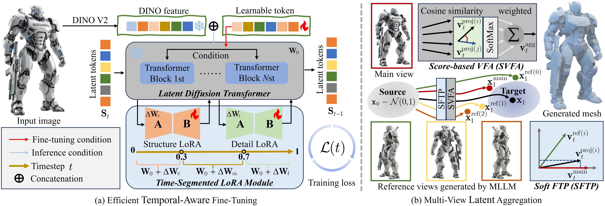
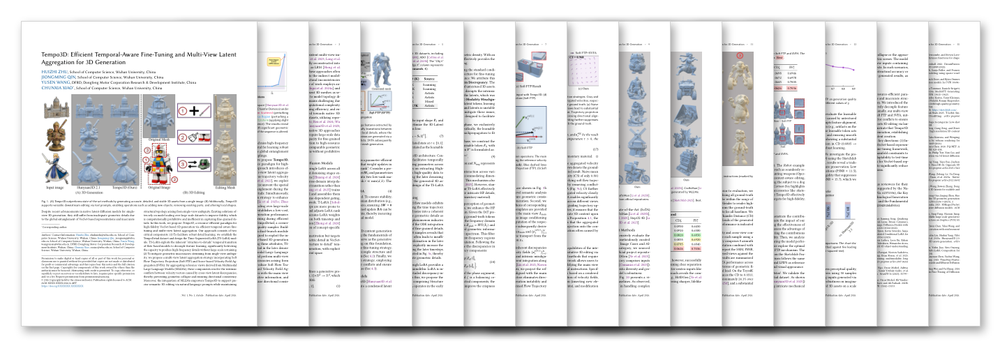

ACM TOG (SIGGRAPH 2026)
We propose Tempo3D, a resource-efficient paradigm for high-fidelity VecSet-based 3D generation. Two key components: (1) the Time-Segmented LoRA (TS-LoRA) module exploits the inherent structure-to-details temporal transition of flow-based models to decouple feature learning, significantly bolstering high-frequency detail generation without large-scale retraining; (2) a multi-view latent aggregation strategy combining Soft Flow Trajectory Projection (Soft FTP) and Score-based Velocity Field Aggregation (SVFA) resolves cross-view velocity conflicts to ensure structural accuracy. Together with the manually curated TempoDetail dataset (2K assets), Tempo3D outperforms state-of-the-art baselines in generation quality, geometric precision, and editability — and supports natural-language 3D editing.

The overview of our framework.

@article{zhu2026tempo3d,
author = {Zhu, Huizhi and Qin, Jiongming and Wang, Yusen and Xiao, Chunxia},
title = {Tempo3D: Efficient Temporal-Aware Fine-Tuning and Multi-View
Latent Aggregation for 3D Generation},
journal = {ACM Transactions on Graphics (Proc. SIGGRAPH)},
year = {2026}
}For technical questions, please contact zhuhuizhi@whu.edu.cn.